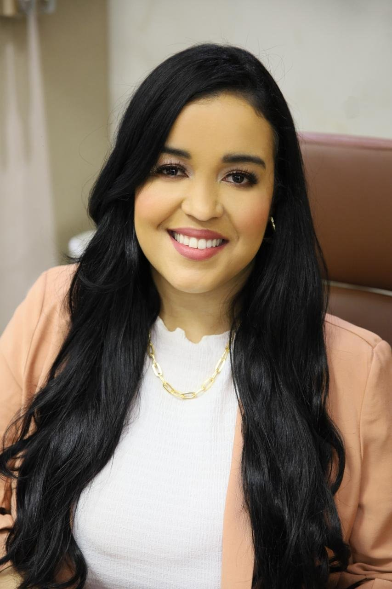
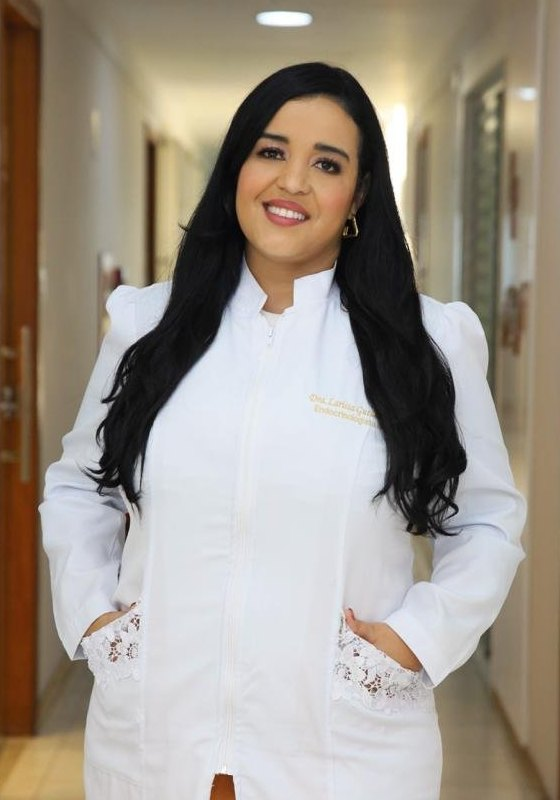

Endocrinologista · CRM 28040 · RQE 19353
Dra. Larissa Guedes
Endocrinologia com escuta e constância, para uma vida mais leve.
Acompanhamento de obesidade e emagrecimento, diabetes, tireoide, menopausa, SOP e alterações hormonais e metabólicas. Consulta particular no Instituto Leviz, no Centro de Feira de Santana, e online.
★★★★★5,0 no Google · 54 avaliações
Por onde começar
O que trouxe você até aqui?
Escolha um assunto e leia no seu tempo. Cada página explica, em linguagem simples, o que costuma ser conversado na consulta. A indicação é individual, definida em consulta.
Quero cuidar do peso com acompanhamento
Obesidade como doença crônica, tratada com respeito e sem culpa.
Peso e metabolismoGlicoseRecebi um exame de glicose alterado
Pré-diabetes, diabetes e o cuidado de todo dia.
DiabetesTireoideDesconfio da tireoide
Cansaço, alteração no TSH ou um nódulo no ultrassom.
TireoideClimatérioOs fogachos chegaram
Sono, calor, humor e as mudanças dessa fase.
MenopausaTambém: SOP e alterações hormonaisComo é a consultaSobre a Dra. LarissaOnde atendo
Linha do acompanhamento
Leveza se constrói elo por elo.
“Ela não precisava de mais uma dieta. Precisava de alguém do lado dela no processo.”Dra. Larissa no Instagram
- Elo 1
Escuta
A primeira consulta começa pela sua história: rotina, sono, alimentação, exames e o que já foi tentado. Sem julgamento sobre o peso.
- Elo 2
Avaliação
Exame físico, exames quando indicados e, quando faz sentido, a avaliação da composição corporal.
- Elo 3
Plano
Estratégias de cuidado definidas de acordo com as necessidades e os objetivos de cada paciente.
- Elo 4
Retornos
Consultas de retorno para ver o que coube na rotina, rever exames e ajustar com calma.
- Elo 5
Constância
Obesidade, diabetes e tireoide são condições de longo prazo: o acompanhamento segue junto.
No Instituto Leviz, ela chama esse cuidado contínuo de Programa Vida + Leve, que descreve com “planner de atividades” e “suporte contínuo”. Os detalhes de cada acompanhamento são combinados em consulta. A indicação é individual, definida em consulta.

Caderno de leveza
Nas palavras da Dra. Larissa.
Frases que ela escreveu para as pacientes, no Instagram e no antigo site. Elas dizem muito sobre o jeito de acompanhar: com respeito, evidência científica e alguém do lado no processo.
Ninguém desiste por falta de vontade. Desiste por falta de acompanhamento.
A obesidade é uma doença crônica e, em mulheres com rotina intensa, o maior desafio raramente é saber o que fazer. É conseguir manter.
A Dra. Larissa acredita que a obesidade deve ser tratada com respeito e baseado em evidência científica.
Instituto Leviz. Medicina, acolhimento e cuidado para uma vida mais leve.
Trajetória
Da saúde da família à sala 302.
As datas vêm do CNES, o cadastro nacional dos estabelecimentos de saúde, e do cadastro público do CNPJ do Instituto Leviz.
- 2013–2016Saúde da família
Estratégia Saúde da Família na Paraíba e no Maranhão; depois, médica na UPA Célio Pires de Sá, em João Pessoa.
CNES - 2017–2019Feira de Santana
Médica da Estratégia Saúde da Família na unidade George Américo II.
CNES - 2020Endocrinologista
Primeiros vínculos como endocrinologista e metabologista, na Policlínica Regional de Alagoinhas.
CNES - Nov. 2020Instituto Leviz
Funda a empresa do próprio consultório, da qual é sócia-administradora.
CNPJ - Desde 2022Policlínica Regional
Endocrinologista na Policlínica Regional de Feira de Santana; desde 2025, também em Cachoeira.
CNES - HojeSawaya, sala 302
Consulta particular no Instituto Leviz e online, com o lema “vida mais leve”.
Google · Instagram
Quem já passou pela consulta
Atenção e acolhimento.
A senhora é nota 1.000 Dra.
Uma experiência maravilhosa,e uma excelente profissional , recomendo
Fui atendida por ela na policlínica amei!
Gostei muito atendeu todas minhas expectativas, uma excelente profissional
Trechos de avaliações públicas no Google, com nome abreviado.
Para ler e acompanhar
Informação que tira o peso.
No Instagram, a Dra. Larissa escreve sobre obesidade, metabolismo e hormônios, e leva às pacientes o que aprende em congressos e rodas de conversa.
Legendas sobre obesidade como doença crônica, acompanhamento, tireoide, menopausa e SOP.
Abrir o Instagram ↗Congresso mundial de menopausaOs fogachos, por dentroDo congresso, ela mostrou um colete que simula os fogachos e falou sobre a qualidade de vida nessa fase.
Ver no perfil ↗Roda de conversa · Outubro RosaOs tabus do climatérioEncontro com mulheres para conversar, com informação, sobre menopausa e climatério.
Ver no perfil ↗Instagram · @institutolevizO Instituto LevizO perfil do consultório que ela fundou, na sala 302 do Centro Médico Sawaya.
Abrir o perfil ↗Onde atendo
Instituto Leviz, Centro de Feira.
Centro Médico Sawaya · 3º andar, sala 302
Av. Getúlio Vargas, 1085 · Centro
Feira de Santana – BA · CEP 44001-496
Horário da recepção
Horário da recepção do Instituto na ficha do Google; a agenda da Dra. Larissa é com hora marcada — confirme com a equipe. Também há consulta online.
Confusão, sonolência intensa ou desmaio com glicose muito baixa ou muito alta, falta de ar ou dor no peito: procure o pronto-socorro mais próximo ou ligue para o SAMU (192). O WhatsApp do Instituto serve para agendar e não é canal de urgência.
Dúvidas frequentes
Antes de agendar
Onde a Dra. Larissa atende?
No Instituto Leviz, consultório que ela fundou: Centro Médico Sawaya, Av. Getúlio Vargas, 1085, 3º andar, sala 302, no Centro de Feira de Santana. Também há atendimento online. Veja mapa e como chegar.
Atende plano de saúde?
Não. Segundo a própria Dra. Larissa, o atendimento é particular.
Como agendar?
Pelo WhatsApp (75) 99279-1577, da recepção do Instituto Leviz. A consulta é com hora marcada.
Posso fazer a consulta online?
Sim, a Dra. Larissa informa atendimento também na modalidade online. Combine com a equipe ao agendar e veja como é a consulta.
Preciso levar exames?
Leve os exames e as receitas que tiver, mesmo antigos, e a lista dos remédios em uso. Se faltar algum exame, ele é pedido na consulta.
E numa urgência?
Procure o pronto-socorro mais próximo ou ligue para o SAMU (192). O WhatsApp do Instituto serve para agendar e não é canal de urgência.
Agende
Um passo de cada vez, para uma vida mais leve.
Consulta particular com hora marcada no Instituto Leviz — Centro Médico Sawaya, sala 302, no Centro de Feira de Santana — ou online. Fale com a equipe pelo WhatsApp (75) 99279-1577.